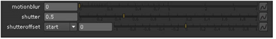
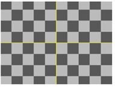
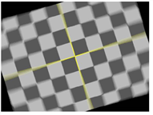
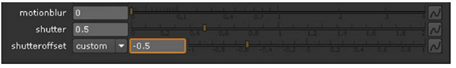
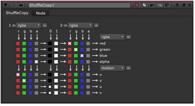
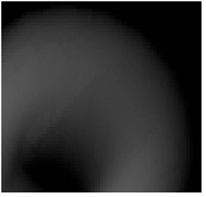
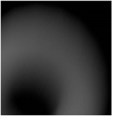

下面的节点 变换 菜单有自己的控件来向变换添加运动模糊:
• 变换
• 变形蒙面
• 卡片 (3D)
• CornerPin2D
• 和解 3d
• 跟踪器
• Stabilize2D

这些控件允许您创建运动模糊，而无需为其添加单独的节点。输出类似于时间模糊节点 (请参见 应用时间模糊过滤器 )，但不是将快门期间以步骤计算的几幅完整图像的结果进行平均，而是在快门期间多次随机拍摄多个样本。这有效地给出了更多的 “步骤”，因此对于较小的计算总数来说，结果更平滑。
|
 |
 |
|
在旋转和运动之前
模糊。 |
旋转和运动后
模糊。 |
当连续使用其中几个节点时，将连接运动模糊，链中的最后一个变换定义应用的运动模糊。
| 1。 | 打开变换节点的控件。 |
| 2. | 创建一个变换并对其进行动画处理。有关如何执行此操作的说明，请参见 使用合成环境 第一章。 |
| 3. | 在 Motionblur 字段中，输入采样率。这将影响在快门时间内对输入进行采样的次数。速度越高，结果就越平滑。在许多情况下，值 1.0 就足够了。将值设置为 0 不会产生运动模糊。 |
| 4. | 在 快门 字段中，输入当运动模糊时快门保持打开的帧数。例如，值 0.5 对应于半帧。增加值会产生更多模糊，减少值。 |
| 5. | 从 Shutteroffset 下拉菜单中，选择快门打开和关闭时相对于当前帧值: |
• 要将快门围绕当前帧居中，请选择 居中 。例如，如果您设置 快门 值为 1，当前帧为 30，快门从帧 29.5 保持打开到 30.5。
• 要在当前帧处打开快门，请选择 开始 。例如，如果您设置 快门 值为 1，当前帧为 30，快门从帧 30 到 31 保持打开。
• 要在当前帧处关闭快门，请选择 结束 。例如，如果您设置 快门 值为 1，当前帧为 30，快门从帧 29 到 30 保持打开。
• 要在指定时间打开快门，请选择 自定义 。在下拉菜单旁边的字段中，输入要添加到当前帧中的值 (以帧为单位)。要在当前帧之前打开快门，请输入负值。例如，值为-0.5 将在当前帧之前半帧打开快门。

向图像添加运动模糊的另一种方法是使用 VectorBlur 节点。VectorBlur 获取图像的每个像素，并将其模糊为直线，使用 u 和 v 通道来确定模糊方向。
VectorBlur 期望输入板的值是像素空间屏幕单位，换句话说，一个单位应该等于一个像素。 Nuke 使用此信息计算一个像素在两帧之间移动的距离。所以，为了得到一个工作的运动模糊结果，你应该确保 Nuke 正在获取正确的值。您可能有使用不同值的文件，特别是如果您使用第三方应用程序创建输入文件。以下是使用从第三方应用程序写入的文件使用 VectorBlur 节点创建运动模糊的示例。
| 1。 | 阅读你的素材和运动模糊文件，例如一个。带有旋转甜甜圈和 a.具有运动模糊向量的 sgi 文件，这些向量被标准化为值介于 0 和 1 之间。 |
| 2. | 使用 ShuffleCopy 节点，选择 VectorBlur 应该从运动矢量文件 (节点输入 1) 和彩色图像文件 (节点输入 2) 中读取的通道。在这种情况下，可以使用运动矢量文件的红色和绿色通道作为运动 u 和 v 通道，使用其 alpha 通道作为 alpha 通道。同时，图像文件将输出主彩色图像的红色、绿色和蓝色通道。 |
有了这个设置，你的 ShuffleCopy 节点控件看起来像这样:

| 3. | 将 VectorBlur 节点连接到 ShuffleCopy 节点。你还需要告诉 VectorBlur 使用哪些运动矢量通道，所以改变 紫外线 渠道 控制至 运动 . |
| 4. | 如果您的运动向量已被标准化为 0 和 1 之间，您可以在 添加 控制至 0.5 偏移运动模糊中心。对于以整数文件格式存储的任何运动矢量，如 16 位 TIFF 或 TARGA，这通常是必要的。向负 x 或 y 方向的向量使用范围内数字的一半，向正方向的向量使用另一半。 |
| 5. | 随着 乘 和 偏移 控件，您可以进一步调整要产生的运动模糊量。的 偏移 值允许您更正向量值的标准化，以及 乘 值控制它们的大小。 |
| 6. | 如果向量已经与 alpha 通道预乘，那么在 alpha 不是 1.0 的地方，它们的值是不准确的。你会想检查 阿尔法 复选框以使用输入图像的 alpha 通道来帮助 VectorBlur 处理已被此 alpha 通道预乘的运动矢量。 |
|
 |
 |
| 阿尔法 禁用。 | 阿尔法 已启用。 |
| 7. | 获得一个好的、均匀的运动模糊结果在很大程度上取决于选择正确的计算方法。在方法下拉列表中，选择: |
• 向后 -反向方法是有效和快速的，但是如果你在整个帧中没有所有像素的运动矢量值，它可能是不准确的
• 向前 -向前方法较慢，但它会给你一个更准确的结果，尤其是在向量没有覆盖整个帧的情况下。在这种情况下，我们知道运动矢量不是连续的，所以向前选择是一个很好的选择。
|
|